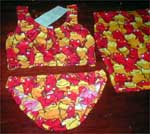
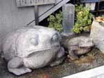
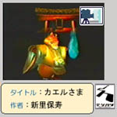
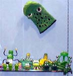

子供用かえるビキニなので、着用は勘弁してもらうとして、こんな素敵な水着で、海水浴の人気を独占しましょ。
【全国かえる奉賛会】どひゃあああ。カエルぎっしりの柄が嬉しいっすよねー。ついにかえる水着モデル登場か！という今年。この水着に続く投稿を待つ！次は、カエルブリーフとかかな。
私の勤める某私大は広島特有の緑一色モリアオ生息地の山にへばりついています。先週号で、あおぞら銀行の話題が出ていましたが、そちら福岡銀行とシステム業務提携を本年開始した広島銀行の商品にも、昨年秋から出現しており、しかもこのお財布ガエルたちが合唱するCFも流れております。誰もが垂涎の「かえるカード」は、広銀支店近辺の人だけが持てまして、福岡の支店ATMにローン申し込み用紙が備え付けられていると思います。
また、本学正門まで上ってくる自動車教習所のシンボルマークにはやはり広島固有のみどりモリアオを使用しており、
通勤時はかえるマイクロバスと一緒に走行することがあります。学内の数平米のコンクリ池にもモリアオ生息があり、心寄せる教員たちも多く、本学のカエル化計画は密かに進行中です。
【全国かえる奉賛会】ぐひょおおおん。大王は決めたぞ。広島銀行をメインバンクにしようかな。ローンカードって普通のキャッシュカードとは違うんだろうか。ほしいいいよおおおおお。カエラーのみなさあああん。今すぐに広島にでかけて、広島銀行に預金しましょう。それにしても、各地で着々とカエル化が進行しているようなので、うれしいであるう。

【江戸発カエル稲荷同志記者】私は東京に住んでいるのですが、近くに麻布十番稲荷というのがあります。こちらの神社はカエル稲荷として知られており、火防や火傷とかにご利益があるそうです。 都会のど真ん中でとても小さいのですが。勿論こちらに初詣です。お守りがカエル刺繍のものとカエルの形のものがあり、なかなか可愛いです。もし機会がありましたら、是非こちらに詣でてください。
夏に近くに行ったときには周りの民家のあちこちにがま池を守ろうといったポスターが貼ってありました。詳しくはこちらをご覧ください。
【全国かえる奉賛会】えーっ。がま池が、マンションになるなんてえええ。悲しいですなー。なんとかならないものであろうかああああああ。ガマ池を活かした地域作りをしないと、かえるに嫌われちゃうよおおお。

大王が連絡とりたいので、誰か探してくれええええ。
というのも、この作品。全編、大王の好みなんだよね。なんかのコンクールに出場して最高賞ではなかったけど、かなり上位作品だったらしいのです。大王が、最高賞を授与したいんで、ぜひともカエル新聞を見ていたら連絡ください。 見れる人はみてちょおお。下のファイルから、『みんなの広場』をクリックしたら、『カエル様』を拝むことができます。
 【福岡かえる展５実行委員会】６月６日カエルの日を祝福するイベント『福岡かえる展』は、今年も５年連続で挑戦することになったぞ。
【福岡かえる展５実行委員会】６月６日カエルの日を祝福するイベント『福岡かえる展』は、今年も５年連続で挑戦することになったぞ。実行委員長代行も内定したんで、あとはスタッフ募集します。去年まで、来場してくれた各地のカエラーのみなさんの中から、今年は、客より主催者側として、至福のカエル時間を味わいたい、という人がいたら、どんどん名乗り出て下さい。 スタッフになる５つのメリット
大王は、第１回目のときに会社七日間やすんで、朝から晩までカエル空間にいたんだけど、そこってさあ、不思議なのは、会場に入って来る人たちが、みんな微笑んでいるんだよね。ほとんどみんながだよ！もちろん入って来てから出てゆく迄ずううっと。微笑みの中で過ごしているんだ。考えてもごらんよ。日々の暮らしの中で、みんなが微笑んでいる空間と時間がずっと続くことってあるだろうか。きっとないよ。カエルな微笑み空間にどっぷり カエラーとの出合いが 幸せな時間が広がる カエルの魅力に惚れなおす カエルグッズもカエルかも
お互い知らない人同志で、そんなことができている場所って、きっとほとんどないよ。スタッフでいるってことは、当日の会場を主催者として楽しむことができるってことです。微笑みのカエル世界へようこそってかんじですね。
詳しいことは、福岡かえる展５公式サイトでお伝えするから、取りあえずはカエル新聞をチェックしていてください。出展や、スタッフ応募は、とりあえずは大王宛にメールくれたらいいです。

********************************************
下関市立しものせき水族館 海響館
下関市あるかぽーと６番１号
電話 0832-28-1100
FAX 0832-28-1139
********************************************
メールマガジン解除


かえる古新聞過去に取り上げた記事を見出し付きで一覧したい人は、ここをクリック◆創刊号を見る◆先週号を見る◆話題の号を見る◆かえる新聞の昔を読む
|
私も入っています。。全国かえる奉賛会
大王様に会うには、このバナーをクリック。ずっと奥に写真館があるぞ。全国かえる奉賛会に入会するには、自分のホームページのどこかに、下の部分を追加するとバナーがリンク付きで表示されるぞ。どんどん入会しましょー |


|